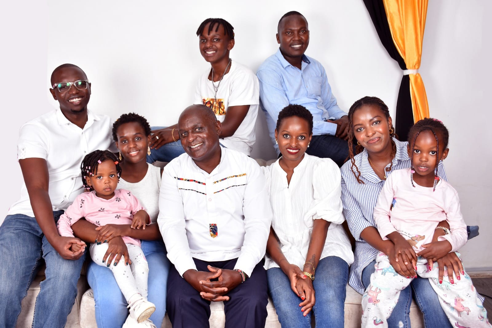

My Early Years

I was born and raised in Nairobi, Kenya. My mother, Eunice Murithi, gave birth to me at Aga Khan Hospital, Nairobi. As a child, I was curious and adventurous, with a strong interest in football and technology. I spent a lot of time either playing football or tinkering with gadgets.
I attended several schools, starting with Tassia Primary School in Nairobi. Later, my family moved to Mombasa, where I joined JICC School. I stayed there for three years before moving back to Nairobi.
My Middle Years

Returning to Nairobi, I continued my education at St.Hannah's School, Nairobi. We also ended up moving to an area called uthiru, near Waiyaki way, Nairobi. The neighbourhood wasn't the perfect but we managed in our own ways. My passion for football grew, and I joined the school team. Later on, even played for a football club called Ligi Ndogo, where I honed my skills and made a name in the football industry.
I then went to Sunshine Secondary School, where I continued to excel in my academics as well as my passion for sports. Used to go for various tournaments and matches, not missing out of any opportunities. Eventually I completed my secondary education at Agakhan Academy, where I graduated with a good B Minus grade.
My Senior Years

In my senior years, I joined Riara University, where I pursued a diploma in Information Technology. It was one of the most interesting times of my life because I got to meet new people and learn new things. I was able to combine my love for technology with my passion for football, as I often used my tech skills to analyze games and improve my performance. I was also involved in various extracurricular activities, including the university's football team, where I played as a midfielder.
My time at Riara University was not just about academics; it was also about personal growth and building lifelong friendships. I learned the importance of teamwork, discipline, and perseverance, which have shaped who I am today. Eventually I finished my Diploma with a credit pass of 74 points, close to distinction but I was satisfied with my performance.
Now I'm pursuing a degree in Information Technology at Zetech University, where I continue to develop my skills and knowledge in the field.
Family
- Mother: Eunice Murithi
- Father: George Murithi
- Siblings: Babra Nkirote
- Brother-in-law Robert Mahebo
- Siblings: Vivian Nkirote
- Brother-in-law Victor Mutuendaru
- Siblings: Joan Rinya
My family has always supported my interests and encouraged me to pursue my dreams. Their guidance has been invaluable throughout my journey.